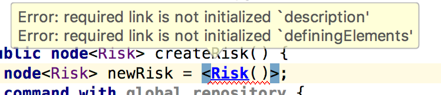
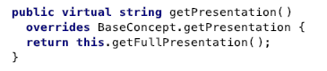
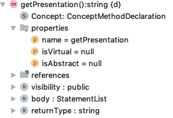
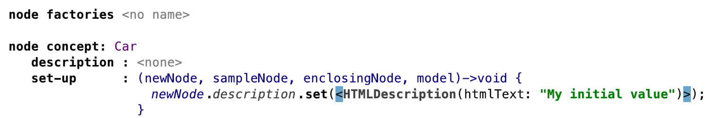
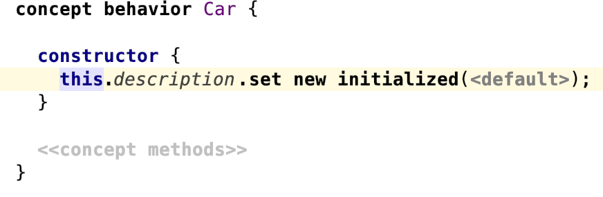
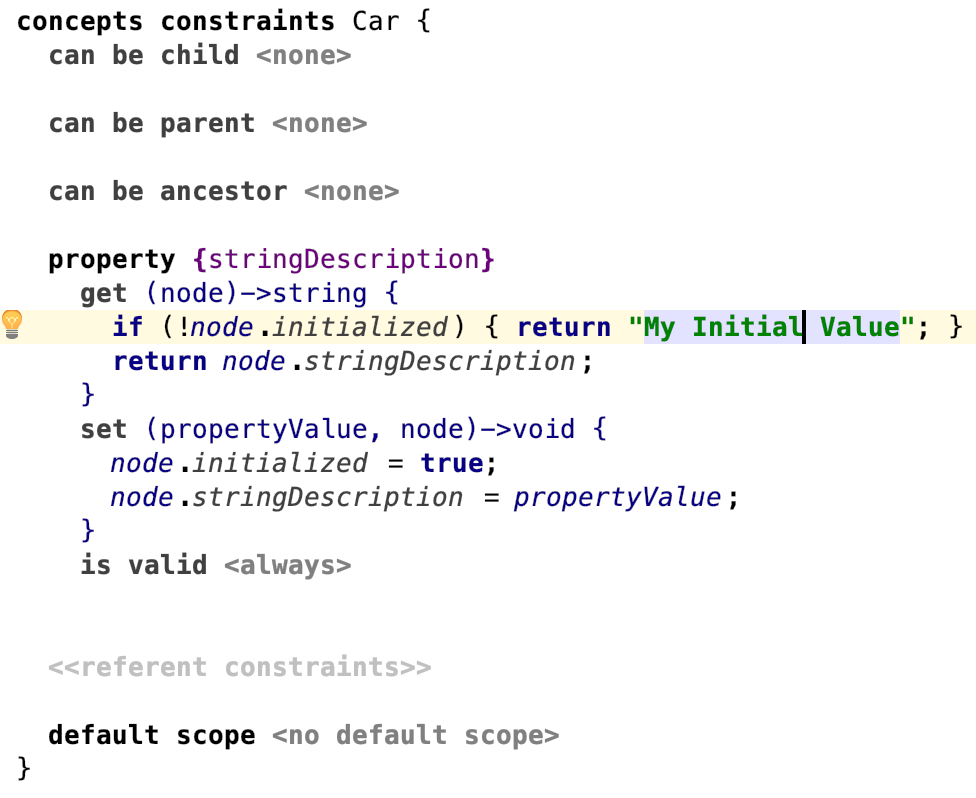

Behavior aspect¶
The behavior aspect can be use for defining methods for the concepts of the language.
General¶
Can you use asynchronous code in behaviour methods such as calling external tools?
Be careful when doing so. Make sure to not mix concurrent locking aspects such as write and read actions with behaviour code. It should always be assumed that you have the correct lock in this methods. Move the code concerning the concurrent access for example into a background task. More information can be found in Progress indicators | MPS.
Where can you save temporary information about nodes?
Consider saving temporay data about nodes in annotations and user objects (node/.putUserObject, node/.getUserObject)
instead of introducing properties.
You can store and access Java-Objects in SNode::putUserObject() as key-value pairs)where you normally could not access them in the MPS context, e.g. storing it as node member and access it in an editor, a checking-rule or anything else. This approach is difficult to trace and maintain and should only be used in exceptional cases.
For the generator consult the section Transferring User Data of the generator documentation.
How to mark a constructor-created child optional? (created by a light quotation)
Example:

Solutions:
- Initialize it with
nullin the light quotation. - Create it without light quotation.
- Allow the child to be optional (
[0..1]).
How can you delete a child node from a node where the child’s concept no longer exists and the parent node’s child link is no longer defined?
Why does the virtual method have isVirtual=false?
Given there is a virtual behavior method
getPresentation. When I overridegetPresentationin a subconcept then I see it displays the overriding method to be virtual.
Yet, I see that
methodDeclNode.isVirtualisnull.
Why is that?
Note that isVirtual and isVirtual() on a method have different semantics.
The editor shows that a method is virtual when isVirtual() is true. As a result, overriding methods of virtual methods are not necessarily having isVirtual=true, but will still display virtual.
The rationale behind may be that if a method is overriding another one, both of them must be virtual. This is needed so that the runtime will find out which of the two implementations to call. So we may read the isVirtual more precisely as „is explicitly virtual”, and isVirtual() as “is effectively virtual”.
contributed by: @abstraktor
Initialization¶
How do you initialize a node?
How can I ensure that all created node will have a non-null
HTMLDescription?
Using a node factory
The node factory will be called when
- The code completion menu is invoked to create such a node or to replace another one.
add new initialized,set new initialized, orreplace new initializedis called.- Such a node is created as a root from the context menu in the project view.
The node factory is not called when
- using quotations
<Car()>. - viewing the node in the editor.
- adding it as a root with
model.add root(<Car()>). - adding it as a root with
model.add new root(Car).

Using a behavior constructor
Using a behavior constructor will only partially achieve this. Note that it will only be called when
- creating nodes with
add new initialized(),set new initialized()and similar methods fromj.m.lang.actionsandj.m.lang.smodel. - creating a node with
new node<Car>().
Using a quotation will not call this constructor.

Using a property getter
You could use an initialized variable and use a combination of property getters and setters.
This would work only for properties though, not for children or references, and requires quotations to also set the initialized value if trying to override the default. Furthermore, your quotations will still be marked.

Can you access the parent in the constructor?
No, it doesn’t work because the node is not attached yet (Concept constructors | MPS). Use for example a node factory to access the parent instead.
How can you query the context in a node constructor?
Does anyone know a way to find the contextExpression from the node constructor?
Use a node factories instead of constructors and make use of the enclosingNode parameter.
Constructors are invoked always when creating a node. Node factories are invoked only by the editor and by the new initialized ... expression.
Note: Node factories are invoked in the inverse order of constructors. MPS will first invoke the specific node factory and the more generic ones if the exist.
Is there a way to call the constructor of a super concept inside the constructor of a subconcept?
Something like:
java constructor { superConcept() }
concept/MyConcept/.new initialized instance() provides this behaviour.
Bugs/missing features¶
Can you use a more specific return type while overriding a behavior method?
No, it is not possible (MPS-27720).
Can you use variable arguments (varArgs) in behavior methods?
No, it is not possible (MPS-31056).
Can you enter a throws clause in behavior methods?
No, it is not possible (MPS-22306).